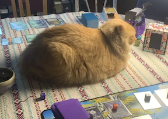

Everything html-revisor adds to a page, drawn with the real stylesheet. This page links client.css; change the stylesheet and both the tool and this page change.
Imperatives
Distinct from the page it revises. The page can be any colors and any styling.
Consistent with itself, so people can always tell which UI came from html-revisor.
Clear what is happening.
Decisions
How the tool looks. How editing as markdown behaves is in SCOPES-DESIGN.html.
Decided
(direction): decided, not built yet.
Distinct by form, not color. Any color clashes with some page. A shape and material that never change hold up on all of them.
The tool draws over the page and never styles it. Hover, selection, and directive marks are elements in the layer, placed over their target. Page elements get no classes. The one rule that reaches them is the copy cursor.
One material for every component: near-black surface, 1px light ring, shadow, square corners, the same in light and dark mode. Agent-made pages round their corners; square ones read as not from this page.
The accent is magenta, the revisor's red pencil. It colors the icon, the marks, and the main action. There is one magenta: hover changes form, not shade. A hovered marker takes a magenta ring; a hovered Done takes a white edge.
The icon is a magenta pencil whose tip faces right: it sits on the left and points at what it addresses. It appears in every UI element html-revisor adds. The marker is the icon on a tile of the material.
Crop marks show hover and selection: four corners with the halo, thin on hover, heavier while the element's box is open. Square corners. They never touch the text.
The directive box opens beside its element, never over it, and points at it. Placement is chosen at runtime: below, above, or in the margin when there is room. Phones count.
Markers sit where they don't cover what they mark, in SVG diagrams too. Hovering one shows crop marks on its element and the directive in our own tooltip.
The box's words are true: Done, not Save, since typing saves; "saved" in the box's footer; Clear on the Directive label's line and Revert on the Content label's line (Revert and Clear); a header with the icon and the element.
The Content field holds the element's markdown, in monospace like the directive.
The docket: bottom right, in the tool's material, with the icon. It counts the directives, steps through them, and holds the stale-file warning. Clicking it turns review mode off, to read the page clean.
The popup is the directive box. On a scope, it is a directive box with editor: the editor is the field for the scope's markdown.
Not decided
Everything below this section is today's prototype. Where it disagrees with Decided, Decided wins.
The rules that place the box and the markers: built (see below), waiting on Jess's review.
Fonts, sizes, and spacing inside the box.
Stress test: any page
Imperative 1. Color alone can't be distinct from every page: some page uses our pink. So every mark gets a halo, a white ring and a dark shadow: a light edge and a dark edge whatever the page.
Has a directive
Hovered
Box open
white
Has a directive
Hovered
Box open
near-black
Has a directive
Hovered
Box open
our pink
Has a directive
Hovered
Box open
red
Has a directive
Hovered
Box open
stripes
Has a directive
Hovered
Box open
pink border
Has a directive
Hovered
Box open
photo behind text
img: hovered, has a directive
Has a directive
Hovered
Box open
cat behind text

cat img: hovered
cat img: box open
What it shows. The halo keeps the crop marks visible on every ground, and the marker carries its own light ring and dark tile. On our pink, the white edge carries the corners; on the cat, the dark edge keeps them off the pale fur. The page element is never restyled, so the tile looks the same with or without the marks. The marker says "this element has a directive". It sits flush left of the first line.
Palette
Custom properties on :root, the same in light and dark mode: the material doesn't follow the page. Values are read from the stylesheet when the page loads.
accent: icon, crop marks, main action, focus; your turns
reply: the agent's voice, its turns and the new-reply bubble
error: failed or stale save
surface: every component
ring: the 1px edge around every component
field: textareas
button: secondary actions, one step lighter than the surface so they read as buttons
line: borders inside a component
text: white, the same as the ring
muted: labels, hint, placeholder
halo: light edge on crop marks
On the page
The tool draws in its own layer above the page and puts no classes on page elements.
Hovering an element puts crop marks at its corners, and the cursor becomes a copy cursor: click to leave a directive or to edit the text.
.hrv-crop: four 10px corners, 2px thick, --hrv-crop-gap (4px) outside the element's box, with the halo. Each arm is at most 30% of its side, so a small SVG label still shows four corners. .hrv-selected, while the box is open: 16px corners, 3px thick, and a 1px outline.
This paragraph has a directive, and so does the div around it. Their markers sit side by side, left of the first line.
Say this in fewer words
.hrv-marker: the icon on a 20px tile of the material, outside its element's box and flush against it, so it never covers what it marks and never reads as a neighbor's. It sits left of the first line, top edges aligned, over the crop mark at that corner; with no room on the left, above the top-left corner. The pencil tip points at the element either way. A marker that would land on another steps outward, left or up, and the inner element keeps the nearest spot. Hovering a marker shows crop marks on its element and .hrv-tip: whatever was said last in the thread, in the material, above the marker, or below it when there is no room.
The agent replied here, and it's your turn.
Added a sequence diagram below this paragraph.
.hrv-answered: a new reply, the agent spoke last. A green speech bubble takes the pencil's place, until you add a turn or Resolve; opening the box doesn't change it. The file says it, so a reload keeps it. Nothing moves. Its tip is the reply, with .hrv-tip-reply's green rule.
Directive box
Opens beside its element: below, above, right, or left, the first side with room in the viewport. It keeps that side while it fits, so it doesn't flip as the element grows under typing. With no room on any side (a tall element, a phone), it pins to the viewport edge farthest from what shows of the element. Along the other axis it shifts to stay in view, and the notch slides along its edge to point at the element. 320px wide or the viewport less 16px. The header names the element: its tag and the start of its text, or its alt. Saves 0.4 s after typing stops, and the footer says so: "saving…", then "saved" for 2 s, or "not saved" when the file changed on disk. Done, ⌘↵ and esc close it. Each field has a label line; its action sits at the right and shows only when it has something to do: Revert on Content, Clear on Directive. Clear empties the directive and leaves the box open, so work in the Content field goes on; ⌥⌘⌫ does the same, and ⌘Z brings the directive back. Fields grow with their text up to 240px, then scroll. The grip in the bottom-right corner (.hrv-grip) resizes the box: drag across for width, down for field height, and Content then holds that height even when short. The size holds for every box and across reloads; a double-click on the grip goes back to the usual size. The Content field wears the element's font, its size held between 12 and 20px.
Where it's headed
p · Where it's headed
Directive
saved
Any element. Below it, the notch on top.
Where it's headed
h3 · Where it's headed
Content
Directive
⌘↵ or esc to close
A directive box with editor, for a scope: its field holds the scope's markdown. Above it, the notch below.
Thread
Once the agent replies, .hrv-thread shows the turns between Content and your field, one .hrv-turn each. A rule at the left and a word say whose: magenta you, green agent (.hrv-agent). The turns stay as written. Your field becomes You, and what you type is your next turn. Resolve, beside Done, ends the thread: the directive and its replies go. The thread grows to 240px, then scrolls, and opens scrolled to the end. A reply that comes in while the box is open joins the thread there: the turn it answers goes up into the thread, and your field keeps what you typed past it, as your next turn.
Where it's headed
p · Where it's headed
Content
youAdd a diagram of the PUT flow here
agentAdded a sequence diagram below this paragraph. I left out the retry path: it doubled the size. Want it as a second diagram?
You
saved
Answered, and you're typing the next turn.
Revert and Clear
For "oh no, I didn't mean to delete that": put a scope's content back to what it held at the last commit.
Where it's headed
section · Where it's headed
Content
Directive
saved
A section whose second paragraph was just deleted. Revert sits on the Content label's line, at the right: it names what it puts back, and it stays away from Done. Each field's action sits on its label's line, and shows only when it has something to do: Revert when the content changed, Clear when there is a directive. Clear, not ×: an × reads as closing the box. Labels are small capitals in the muted gray; the actions are quiet text. The footer holds what belongs to the whole box: "saved", which covers both fields, and Done.
Shows only when the content differs from the last commit. Its presence says "you changed this."
It types for you. Revert puts the committed markdown into the Content field as if typed: it saves like typing, and ⌘Z undoes the revert.
A deleted element comes back from the scope around it. Deleting a paragraph means editing its parent's markdown; that parent's box has the Revert. Reverting a bigger scope also undoes the other edits inside it.
Content only. Directives stay as they are.
No page-wide revert.git checkout does that, and a one-click "throw it all away" is too easy to hit by mistake.
Named Revert, as in git. "Reset" reads as a form reset, "Undo" as one step back.
Back to the last commit, not to the page load. A reload, the panic move, doesn't lose it, and in an iterate loop the last commit is the start of this turn.
Finding the scope in the commit. To revert this section, the server reads the committed file and looks for the same section in it. Text can't find it, since the text is what changed. The element ID can: each element carries a number, data-hrv, that edits don't change. A commit made mid-loop holds those numbers. A page committed clean has none, but the server numbers a page the same way every time, so it numbers the committed copy and gets the numbers the page got when you opened it. A scope added since the commit has no match, so it gets no Revert.
Where it's headed
p · Where it's headed
Directive
saved
The plain box, on an element that isn't a scope, gets the same Directive label and Clear, so Clear is in one place in both boxes.
Keyboard
Tab goes round the box in reading order: Revert, Content, Clear, Directive, Done, then back to the start. Shift-Tab goes the other way. An action that's hidden takes no stop. Esc is the way out; Tab never leaves the box, and never types a tab into a field. Enter or Space presses the button Tab is on.
Where it's headed
section · Where it's headed
Content
Directive
⌘↵ or esc to close
Tabbed to Revert. The ring is an outline, 2px out, so the label line doesn't move.
Where it's headed
p · Where it's headed
Directive
⌘↵ or esc to close
Tabbed to Done. The ring stands off the accent fill by 2px of the box's surface. A click shows no ring: :focus-visible.
Icon
.hrv-icon: a magenta pencil, drawn as a mask from --hrv-pencil so it takes the accent. The tip faces right: the icon sits on the left of what it marks and points at it. The marker is the same pencil on a tile of the material.
icon, in a component
Docket
.hrv-docket: bottom right of the window, always there. The count follows each keystroke. ↑ and ↓ (or ⌥↑ and ⌥↓, when the focus isn't in a text field) step through the directives in document order, wrapping at the ends: the element scrolls to the middle of the window, shows its crop marks for 2 s, and its marker shows its tip, so you read each directive as you step. The tip stays until the next click. Stepping doesn't open the box, since the box takes the focus and covers the page; the marker is right there to open it. Clicking the icon and count turns review mode off: no markers, no hover marks, no copy cursor, and clicks go to the page, links included. Click again to turn it back on. A save error stays on the docket until a save succeeds; the stale-file warning stays until reload.
3 directives
↑
↓
0 directives
↑
↓
Counting; with no directives, it shows only the count.
3 directives · review off
↑
↓
Review mode off: the icon and words go grey.
save failed: Failed to fetch
3 directives
↑
↓
Save failed. The next edit retries.
file changed on disk — reload to see it (your unsaved text is in the box)
4 directives
↑
↓
Stale file: no more saves until reload.
Type
One size, 13px at line height 1.4, everywhere in the layer. --hrv-font is system-ui. The directive field is --hrv-mono, monospace, since a directive is an instruction headed into an HTML comment. Labels and the hint differ by color alone: muted; the save status that replaces the hint takes the text color. The Content field: the element's own font.